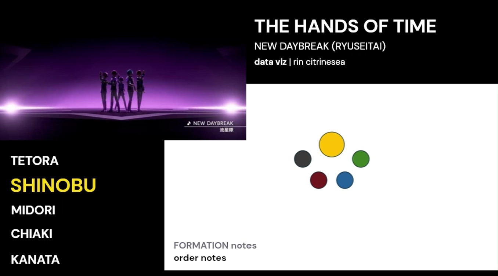

★ ANALYSIS
Humanity and Godhood
ANALYSIS | An essay on the (meteor) impact of Kanata and Keito's relationship with each other.


AKARYUSEI Connections Analysis and Survey
DATA VISUALIZATION | Which AKARYUSEI characters have the most stories together? What did AKARYUSEI-Ps think were the right answers? The results!


MV Analyses
DATA VISUALIZATION | Videos where I visualize the choreography of different AKARYUSEI songs. Newest addition: NEW DAYBREAK (RYUSEITAI)
Song Analyses
ANALYSIS | RYUSEITAI center songs and how their instrumentation relates to each other